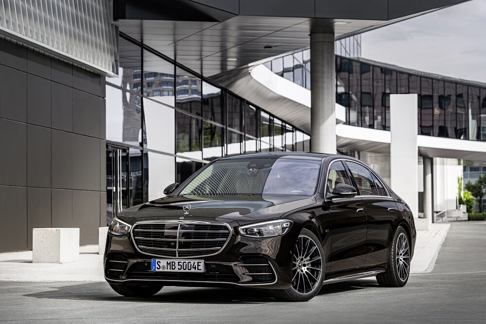

Mercedes-Benz klasy S
Mercedes-Benz klasy S

Mercedes-Benz klasy S − samochód osobowy klasy luksusowej produkowany pod niemiecką marką Mercedes-Benz od 1972 roku. Od 2020 roku produkowana jest siódma generacja modelu.
EMAIL